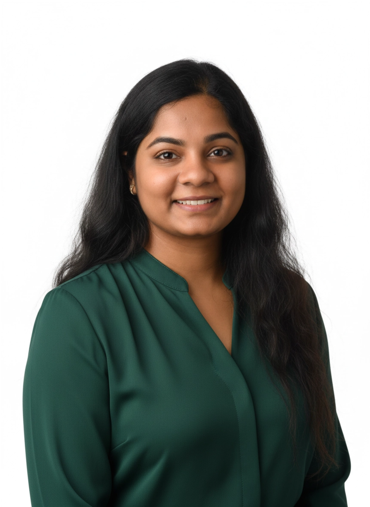
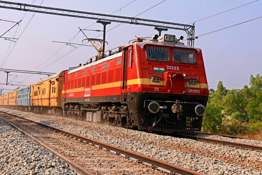
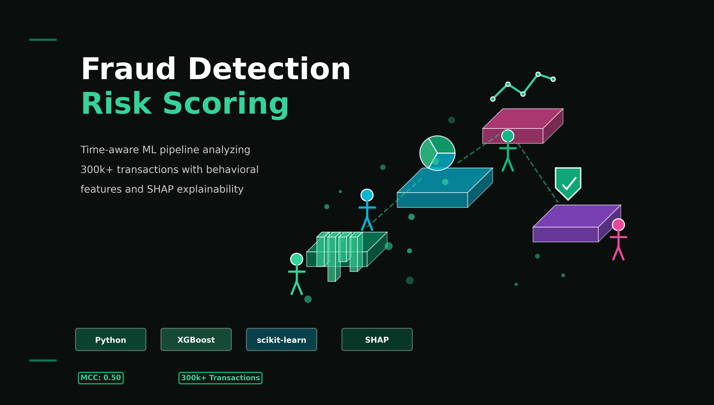

Data Scientist with 5+ years delivering production-grade ML & analytics solutions in regulated enterprise environments — from freight networks to state government.

Engineering roots.
Data science expertise.
Always learning.
I began my career in 2013 at Infosys, progressing over five years to Senior Software Engineer — building multi-tier backend systems and data pipelines for large enterprise clients across sourcing, finance, and logistics domains.
After relocating to the US, I made a deliberate investment in upskilling across machine learning, deep learning, and generative AI, laying the foundation for a full pivot into data science.
I'm currently completing a Master of Science in Data Science (Computing & Decision Analytics) at Arizona State University with a perfect 4.0 GPA — focused on applied ML, statistical modeling, and data-driven decision systems.
Previously, I served as a Data Scientist at the New Mexico Department of Information Technology, delivering production-grade ML models and a first-of-its-kind GenAI analytics system that compressed insight retrieval from minutes to seconds across statewide cybersecurity operations.
I'm drawn to roles at the intersection of software engineering and data science — where rigorous systems and deep analytics come together to solve real problems at scale.
Classification, regression, clustering, anomaly detection, forecasting, A/B testing, and rigorous experiment design for production environments.
LLM integration, embeddings, RAG architecture, and conversational AI systems deployed in regulated, production analytics environments.
ETL pipelines at scale, SQL optimization, data modeling, and executive dashboards that translate complex data into clear decisions.
Owned full delivery lifecycle — from problem framing and metric definition to Python/SQL data pipelines and model deployment — supporting statewide IT and cybersecurity operations.
Built models over 10K+ incident records, enabling faster triage and proactive risk identification. Developed a filtering framework flagging 100+ non-partner vendors, improving compliance visibility.
Led development of the agency's first LLM + Embeddings + RAG system, compressing insight retrieval minutes → seconds and materially improving analyst efficiency across statewide operations.
Designed automated fraud detection solutions replacing manual controls, delivering $1M+ annual cost savings and earning executive recognition.
Built anomaly-focused models and optimized pipelines processing 1M+ records/day, reducing reporting latency by 40% and improving reliability for downstream decisions.
Expanded from backend engineering into analytics by cross-skilling in Python, statistics, and data analysis — moving from reporting into predictive and exploratory analytics.
Built Python- and SQL-based workflows applying regression, classification, and anomaly detection to surface inefficiencies and risk patterns across enterprise data systems.
Contributed to a high-visibility enterprise modernization program migrating mainframe-based sourcing systems to SAP with Teradata as the enterprise data warehouse.
Ensured accuracy across legacy and modern systems during migration — stabilizing analytics and reporting post-migration for critical procurement operations.


Whether you have a project in mind or want to explore opportunities — I'm always open to meaningful conversations.